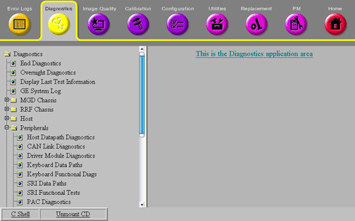

Proprietary to General Electric Company
Direction 5670006, Rev# 1
Discovery MR750w GEM Service Methods
Module Version 2.0, Version Date 9/23/08
Proprietary to General Electric Company |
Diagnostics are available to check most parts of the system. To access from the Common Service Desktop (CSD), click [Diagnostics], select Peripherals from the column on the left, and then select the specific test. (See Illustration 1.)
Illustration 1: Peripheral Diagnostics

For more information on an individual test, click the underlined hyperlink on the Diagnostic screen. For general information on how to run diagnostics, exit diagnostics or access diagnostics help and theory, refer to Diagnostics Overview.
All these tests are pass/fail and ping the following boards:
APS
AGP
SCP
To access full details about this test (including theory, instructions, and troubleshooting) directly from the test's Service Browser interface, click the hyperlinked text or click here to go directly to the online Help.
The purpose of this diagnostic is to perform a read-write test on any available nodes on the Controller Area Network (CAN) network. The CAN is a communications layer used to communicate serially to nodes over a high-speed data layer. The CAN network uses a protocol called CANopen to communicate with its peripherals or nodes. Each node has a unique node ID (1-31) that helps determine where each message is intended to arrive.
This test will determine which nodes are available on the link by listening in to the network, and determining which nodes are available based on their Node IDs. Once the nodes are detected, a walking ones pattern is sent to each node and read back to verify the communications link. The test can be set to run several iterations to help find any intermittent failures.
To access full details about this test (including theory, instructions, and troubleshooting) directly from the test's Service Browser interface, click the hyperlinked text or click here to go directly to the online Help.
These diagnostics provide the ability to test the functionality of the Driver Control Module and components within this module. Click test names for comprehensive descriptions.
These diagnostics verify the communications between the SCP and the following: keyboard processor, keyboard's auto advance sound capabilities, SCIM (keyboard processor) serial communication path on the SCP board in the MGD chassis and its loopback, and SCIM serial communication path is working with a loopback connector external to the STIF board. The tests include the following:
To access full details about this test (including theory, instructions, and troubleshooting) directly from the test's Service Browser interface, click the hyperlinked text or click the name in the list above to go directly to the online Help.
This test checks the functionality of the hard keys on top of the keyboard.
To access full details about this test (including theory, instructions, and troubleshooting) directly from the test's Service Browser interface, click the hyperlinked text or click here to go directly to the online Help.
The SRI data paths diagnostic tests the communication paths between the internal sections of the SRI. These tests include the following:
To access full details about this test (including theory, instructions, and troubleshooting) directly from the test's Service Browser interface, click the hyperlinked text or click the name in the list above to go directly to the online Help.
SRI functional tests include the following:
To access full details about this test (including theory, instructions, and troubleshooting) directly from the test's Service Browser interface, click the hyperlinked text or click the name in the list above to go directly to the online Help.
All these test are pass/fail.
This diagnostic contains the following tests:
To access full details about this test (including theory, instructions, and troubleshooting) directly from the test's Service Browser interface, click the hyperlinked text or click the name in the list above to go directly to the online Help.
This test allows visual inspection of the PAC and STIF serial transmitters and the fiber-optic cables that connect to them.
To access full details about this test (including theory, instructions, and troubleshooting) directly from the test's Service Browser interface, click the hyperlinked text or click here to go directly to the online Help.
This diagnostic confirms that the SCP can access the RF Amp control registers in the SSM-CPD and that the RF Amp hardware matches what was entered in the MRconfig.cfg file. This diagnostic contains the following tests:
To access full details about this test (including theory, instructions, and troubleshooting) directly from the test's Service Browser interface, click the hyperlinked text or click the name in the list above to go directly to the online Help.
The functionality of the Gradient hardware is directly exercised through running this diagnostic and includes the following tests:
To access full details about this test (including theory, instructions, and troubleshooting) directly from the test's Service Browser interface, click the hyperlinked text or click the name in the list above to go directly to the online Help.
This functional check requires the use of an oscilloscope. It is mainly intended for use while troubleshooting a problem involving the Unblank signal.
To access full details about this test (including theory, instructions, and troubleshooting) directly from the test's Service Browser interface, click the hyperlinked text or click here to go directly to the online Help.
This diagnostic, run from the SCP, verifies features of the RRF through the CAN link and contains the following tests:
To access full details about this test (including theory, instructions, and troubleshooting) directly from the test's Service Browser interface, click the hyperlinked text or click the name in the list above to go directly to the online Help.
The Patient Handling Power Supply (PHPS) Functional diagnostic checks the status of the different power supplies in the PHPS module via CAN communication. This diagnostic contains the following tests:
To access full details about this test (including theory, instructions, and troubleshooting) directly from the test's Service Browser interface, click the hyperlinked text or click the name in the list above to go directly to the online Help.
The UPM (Universal Power Monitor) Functional diagnostics checks the status of the supplies via CAN communication. This only applies to systems equipped with an Amplifier Support Controller (UPM).
To access full details about this test (including theory, instructions, and troubleshooting) directly from the test's Service Browser interface, click the hyperlinked text or click here to go directly to the online Help.
This test illuminates the fiber-optic transmitters on the STIF board to allow testing their intensity. The signals illuminated are SRI Reset, SRI Tx, MDS Tx, Grad X,Y,Z,Clock, and PAC Tx. For complete procedures on running these diagnostics, see STIF Board SRI PAC MDS Link Fiber Optic Checks. A Fiber-Optic Light Meter Kit is required to perform this test. Refer to Fiber-Optic Light Meter Kit Parts Breakdown.
For systems with a Fiber-Optic Repeater at the Penetration Panel, this test is provided to verify lines between the System Cabinet and the Fiber-Optic Repeater Board (except SRI Reset). When the test runs, the STIF sends a data pattern out to the Fiber-Optic Repeater Board, and verifies that the exact same data is looped back to the STIF. Any mismatches indicate that either the loopback jumper is not set, or there is a fault in the lines between the STIF and the Fiber-Optic Repeater Board. This diagnostic contains the following tests:
To access full details about this test (including theory, instructions, and troubleshooting) directly from the test's Service Browser interface, click the hyperlinked text or click the name in the list above to go directly to the online Help.
This diagnostic allows setting of currents on various High Order (HO) Shim channels and reading of these currents. In addition, various tests allow the user to determine the functionality of the HO Shim Circuit and the health of the supply:
To access full details about this test (including theory, instructions, and troubleshooting) directly from the test's Service Browser interface, click the hyperlinked text or click here to go directly to the online Help.
The purpose of this diagnostic is to help the field engineer in troubleshooting faults related to the T/R, DD and MC system paths. This diagnostic has the ability to detect the following faults:
Open, Short on Transmit - Receive Paths
Open, Short, Transmit, Receive on Multi-Coil Paths
Open, Short, High Voltage on Dynamic Disable Paths
Head and Body TR Swap
Head and Connector A Swap
Multi-Coil Cable Disconnects or Swaps
Open, Short on Multi-Nuclear Spectroscopy (MNS) if available on system
To access full details about this test (including theory, instructions, and troubleshooting) directly from the test's Service Browser interface, click the hyperlinked text or click here to go directly to the online Help.
The purpose of this test is to verify connectivity and proper operation of the one-wire temperature and humidity sensors.
Temperature and humidity query to Sensor that is located near GOC.
Temperature and humidity query to Sensor that is located near Systems Cabinet.